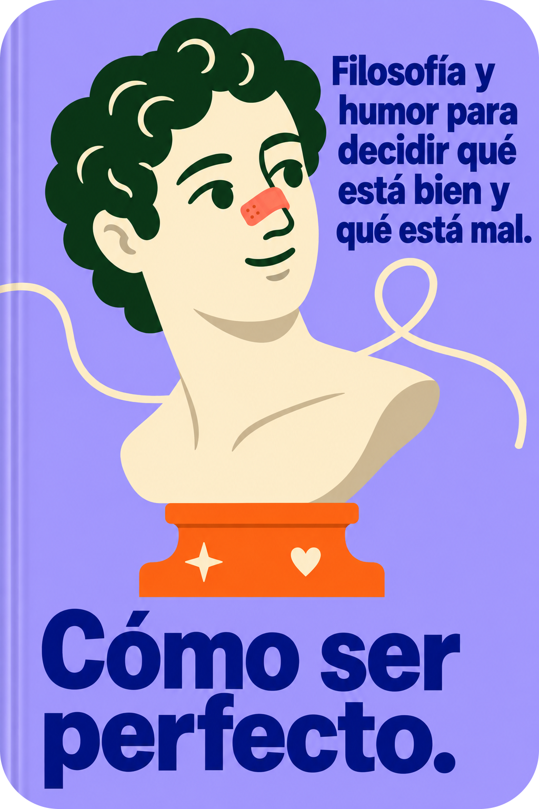
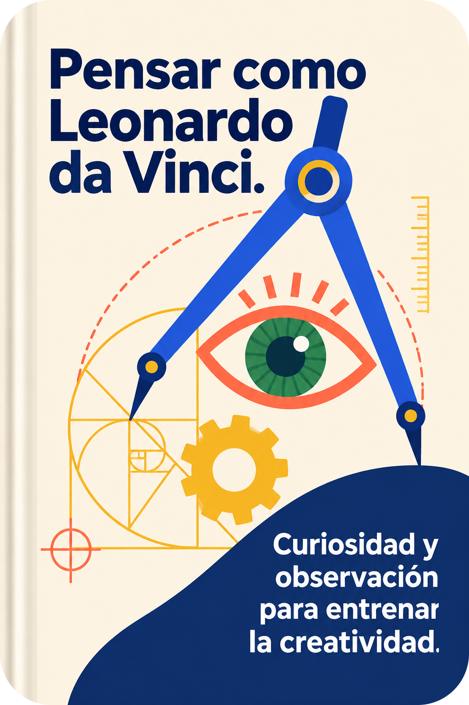
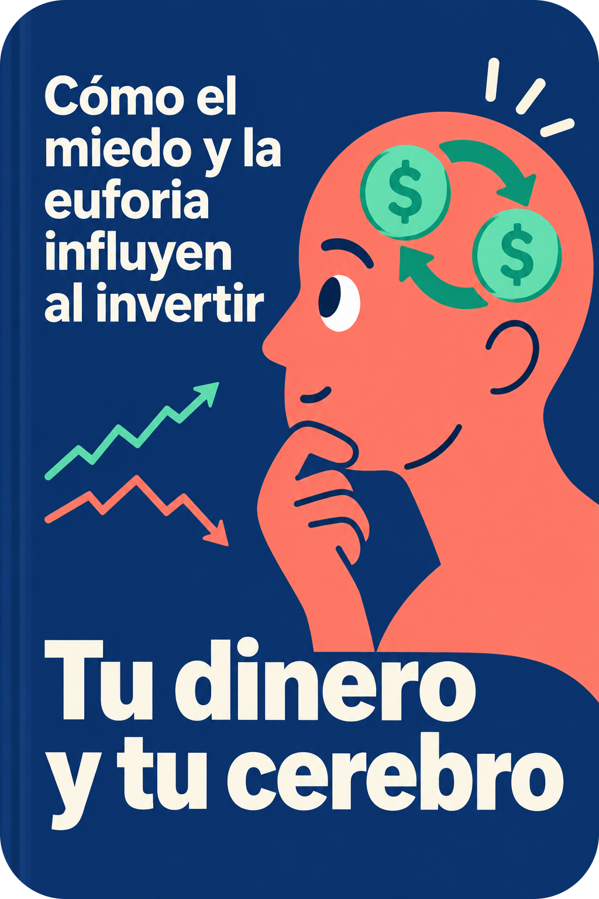
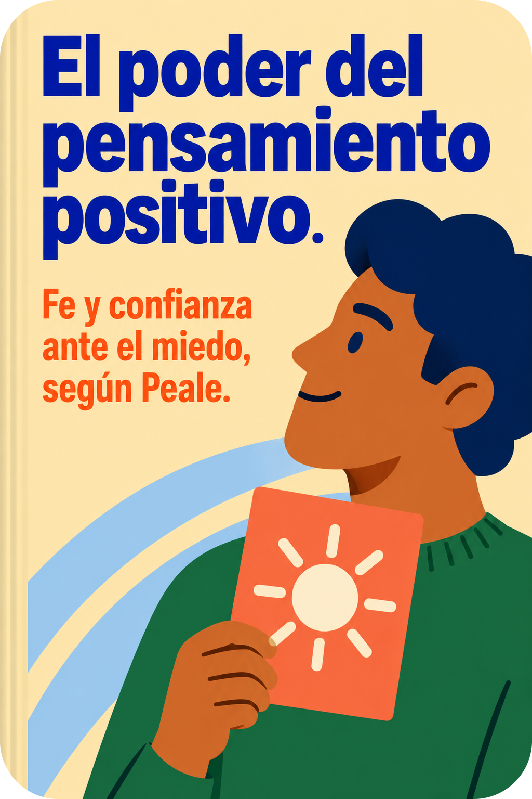
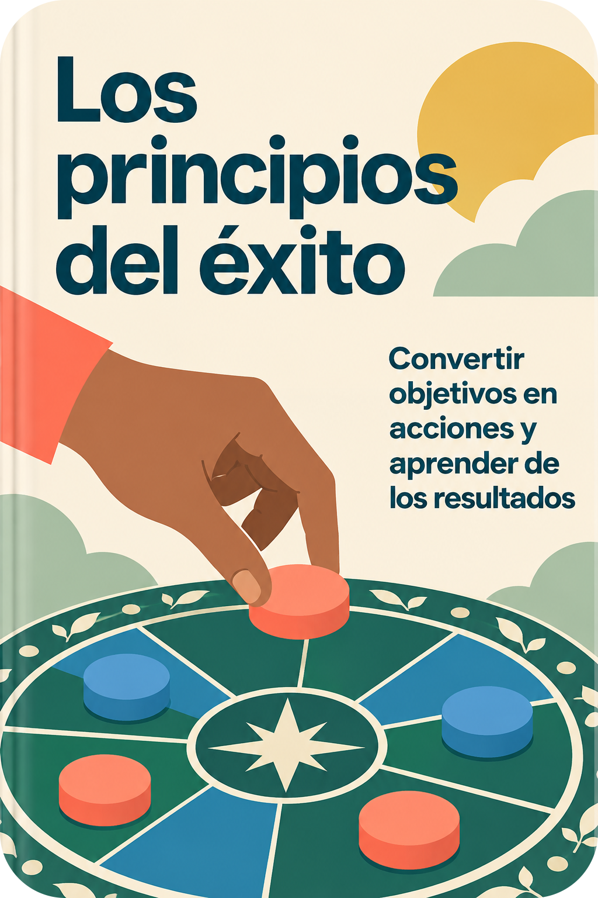
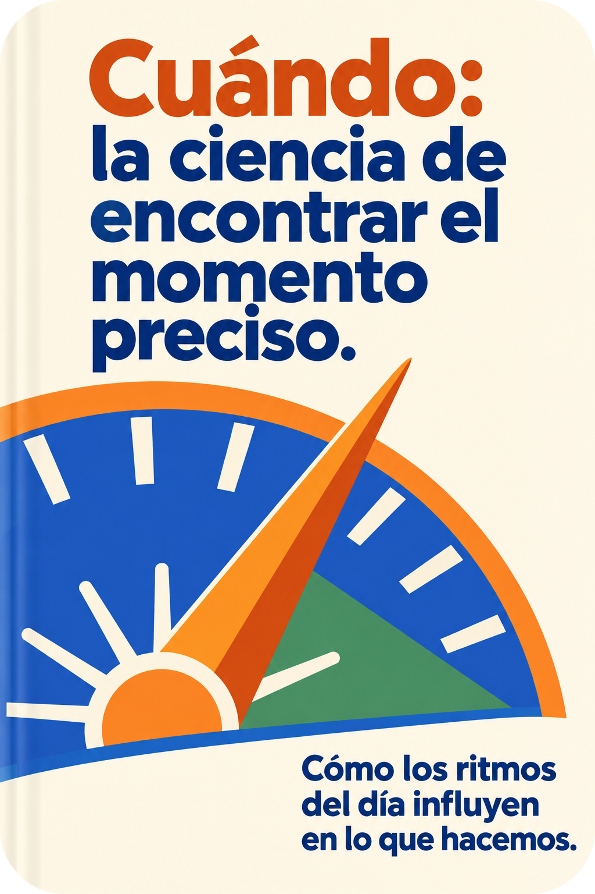
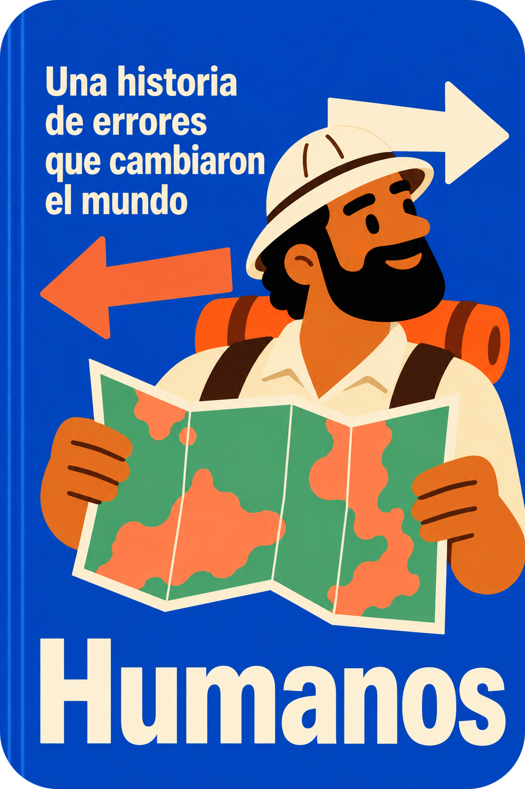
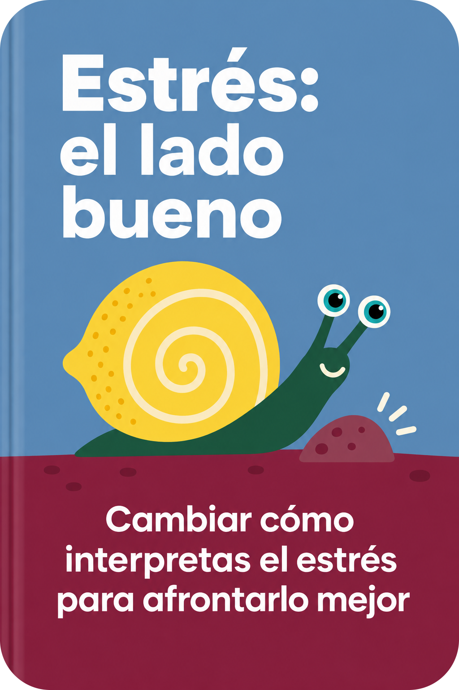

Originales aportados por el usuario en TAND1, TAND2 y TAND3. Sus libros tienen el resumen pendiente. Falta la portada 025: La dieta de la longevidad, de Valter Longo.
Tabla del catálogo · Archivos y procedencia
Florian Illies

Michael Schur
Oliver Sacks

Michael J. Gelb
Juan Gómez-Jurado
Brené Brown

Jason Zweig
Gary Taubes
Steven Kotler
Shane Bauer
Rolf Dobelli
Joseph Campbell y Bill Moyers
R. J. Palacio

Norman Vincent Peale

Jack Canfield
Robert H. Lustig
Jeff Benedict y Armen Keteyian
Antony Beevor
James Allen
Desmond Morris
John Green
Nicole LePera
Grant Cardone
Ian Kershaw
Gaur Gopal Das
Matt Ridley
Malba Tahan
William H. McRaven
Dan Ariely

Daniel H. Pink
Jared Diamond
Séneca

Tom Phillips
Noah Gordon
Laura Vanderkam
Sheryl Sandberg

Kelly McGonigal
Adam Hochschild
Miyamoto Musashi
Adam Rutherford
Ildefonso Falcones
Gary John Bishop
Clayton M. Christensen, James Allworth y Karen Dillon
John J. Ratey y Eric Hagerman
Tom Holland
Dean Burnett
Anónimo
Dale Carnegie